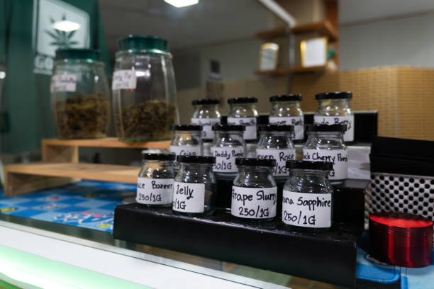

The benefits of medical cannabis for patients in Mississippi
Posted by on 2024-05-24
Medical cannabis has been a hot topic of debate in Mississippi and across the country for years. With more and more states legalizing its use for medical purposes, it is important to consider the benefits that this natural remedy can provide to patients in need.
One of the main benefits of medical cannabis is its ability to alleviate symptoms of various medical conditions. From chronic pain and inflammation to seizures and anxiety, medical cannabis has been shown to provide relief for patients where traditional medications have failed. By targeting the endocannabinoid system in our bodies, cannabis can help regulate pain perception, mood, appetite, and sleep patterns.
Furthermore, medical cannabis is a safer alternative to many prescription drugs that come with harmful side effects. Opioids, for example, have been at the center of an addiction epidemic in this country. Medical cannabis offers a non-addictive option for patients suffering from chronic pain or other conditions that may require long-term medication.
In addition to its therapeutic benefits, medical cannabis can also improve quality of life for patients by increasing their overall well-being. Many patients report feeling more relaxed, less anxious, and better able to cope with their symptoms when using medical cannabis as part of their treatment plan.
It is time for Mississippi to join the growing number of states that have legalized medical cannabis and give patients access to this valuable resource. By doing so, we can ensure that those in need are able to benefit from the healing properties of this plant without fear of legal repercussions.
In conclusion, the benefits of medical cannabis for patients in Mississippi are numerous and undeniable. It is time for policymakers to recognize the potential that this natural remedy holds and take action to make it available to those who need it most. Let's prioritize patient care and well-being by legalizing medical cannabis in Mississippi today.